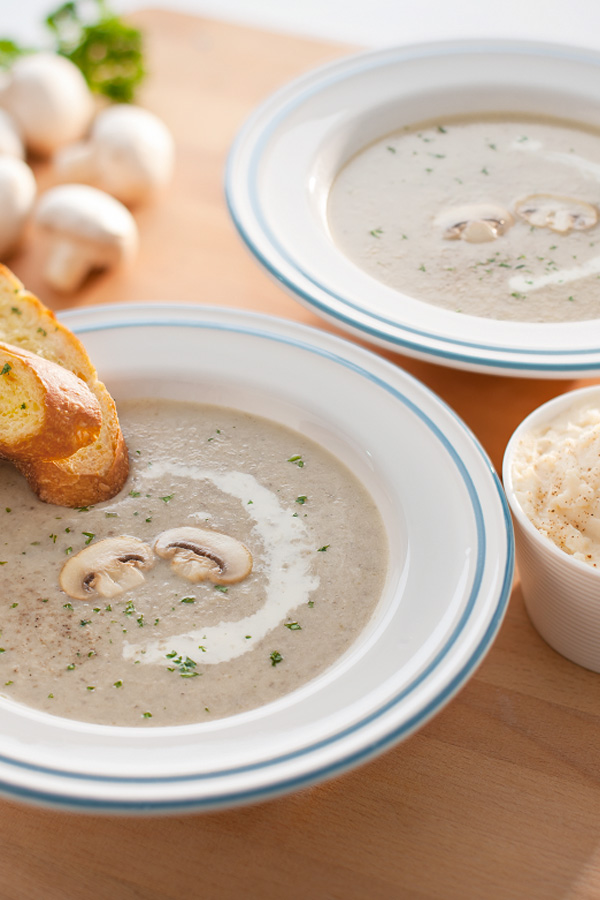

Mushroom soup

Preparation time: 10mins
Ingredients
- 6 tbsp Butter
- 1pc Yellow onion, sliced
- 5 clove Garlic, sliced
- 15pc Button mushroom, sliced
- 3 tbsp Wheat flour
- 5 cups Water
- 1 tsp AJI-SHIO® Flavoured Black Pepper
- 1 ½ tbsp TUMIX® Chicken Stock
- ½ cup Cooking cream
Instructions
-
Melt the butter. Fry the yellow onion, garlic and mushroom until soft.
- Add in wheat flour and mix until even.
- Add in 1 cup on water. Blend the mixture until fine paste.
- Pour into the pot, pour in remaining water.
-
Season with AJI-SHIO® Flavoured Black Pepper and TUMIX® Chicken Stock.
- Simmer until the soup thickens.
- Pour in cooking cream. Stir well.
- Ready to serve.
Click here to home page